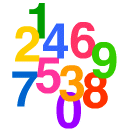

|  |
In this page, WTM will present some interesting activities similar to those that appear in another page (Digital Diversions). The difference, however, will be that here all ten digits -- 0, 1, 2, ,9 -- will be used. This is the reason the word "pandigital" is used in the title. ("pan" is a prefix that means "all, every one".) |
|
|
|
|
|
Who's Absent? Something interesting occurs if we change our rules of our basic game a little bit. Observe the following: 2765115672 is a nice palindrome of ten-digit size. (Remember: that's not ten different digits.) If we multiply it by 3, we get 8295347016, which is a nice pandigital number. All ten digits are present. But what if we had written down our palindrome hastily, omitting one of the pair of 1's that are in the middle? It could happen, you know. We do make mistakes from time to time, whether we'd to admit it or not. What affect would this produce on our product? Let's see.
Ta-dah! An interesting value, don't you think? We have a 9-digit number composed of 9 different digits! And look closer - who's missing? Who is absent? Why, the digit 3, of course. Now that's truly interesting. But is it a once-in-a-lifetime event? Well, lucky for us numerophiles, it isn't. In fact, there's another one nearby. This time the palindrome to be shortened by removing a central digit of 1 is 2753113572. First, try multiplying it by 3 to see the true pandigital product. Then multiply the shorter version by 3 again. Who's absent this time? (Hint: it's not 3.) And our luck continues if other numbers besides 3 are used as our factor with a reduced size palindrome. Here's a small listing of some dual-use palindromes with their accompanying factor:
Remember: always remove the middle digit, or one of a middle pair of identical digits. (* Special note: the palindrome here is not just any old palindrome. It also happens to be a prime number. Hence, it's called a palprime, for short.) |
|
Some Division Trivia The number statement given in red in the previous activity provides us with a new angle to pursue. Using the idea of inverse operations, we can change the multiplication into a division like so:
We might notice that the left side, the division, now consists of all ten digits, right? Hence, it is a pandigital division statement. This nice idea should prompt any good number hunter to look for more such cases. We're happy to report that many do exist, and they come in different categories according to the number of digits in the dividend and the divisor. With the help of our collaborator, Jean-Claude Rosa, leaving the palindromic quotients as an exercise for you, we present the following summary:
the smallest: 128943760 ÷ 5 the largest: 862504731 ÷ 9 number of solutions:146
B. abcdefgh ÷/ ij
C. abcdefg ÷ hij
D. abcdef ÷ ghij
E. abcde ÷ fghij
|
|
Pandigitals and Pi Every school boy and girl, at least in my school days long ago, learned about the famous number "pi". Of course, the value of this fascinating number is approximately 3.14, but we were often taught about a fractional approximation of 22/7, or the mixed number version 3 1/7. This leads us to wonder if we could connect our topic of pandigitality with pi. Here is what we have come up with so far. First, let's examine 22/7, the so-called improper fraction form. Using all ten digits, we can show these three representations:
------ ------ ------ 15687 17829 19845 (In fact, these are the only ways possible with all ten digits.) Turning now to the mixed number form, we are faced with a slightly different situation. The whole number part, 3, is fixed and can't be changed, whereas the fraction, 1/7, can take many forms. This means we need to find ways to write 3 n/d, where n & d are composed of the remaining nine digits. Unfortunately, such is not possible; there do not exist two numbers of the form abcd and efghi, such that
abcd 1
3 ------ = 3 ---
efghi 7
Hence, we must be content with cases that use fewer digits. The only one that uses 8 digits in the fraction is
1094
3 -------
7658
(Who's absent?)
The smallest case is 3 2/14, which is interesting in its own right as it is made from the first four counting numbers (a.k.a. the natural numbers). There are five other cases where the numerator is a single digit. That means, fractions of the form a/bc. As we increase the number of distinct digits, we can state these following observations:
Well, what do you think about pi now?
|
|
| Comments? Send e-mail. | Back to top | Go back to Home Page | Go back to Contents |